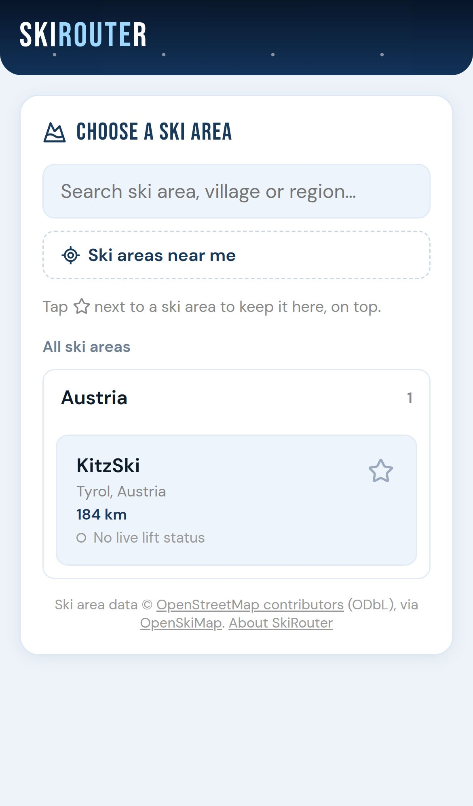
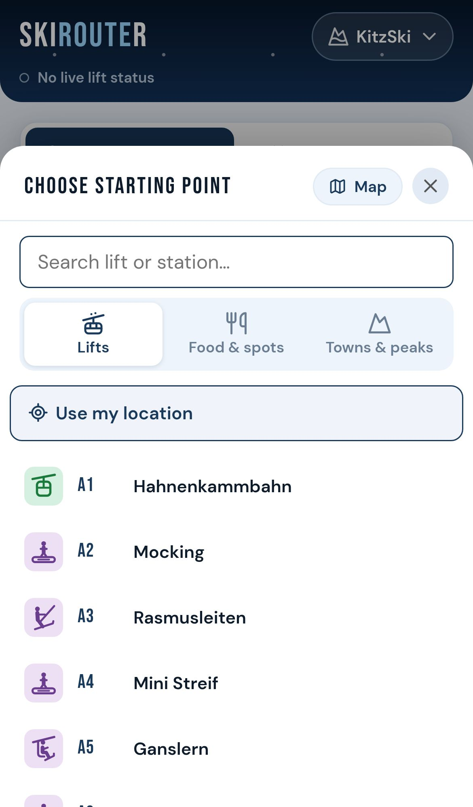
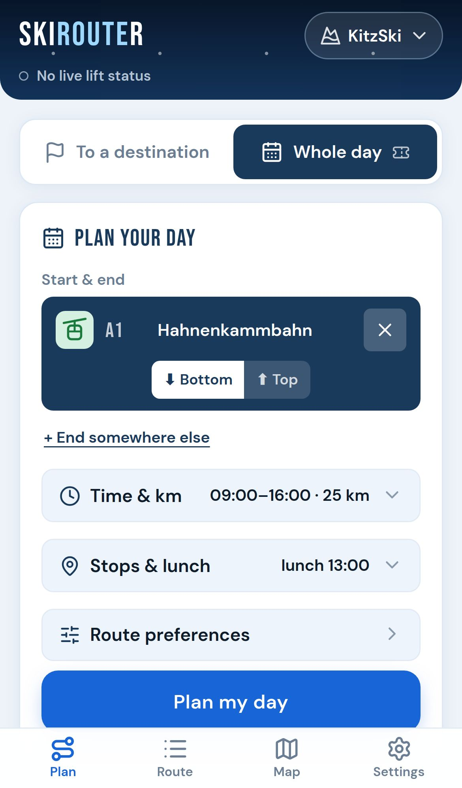
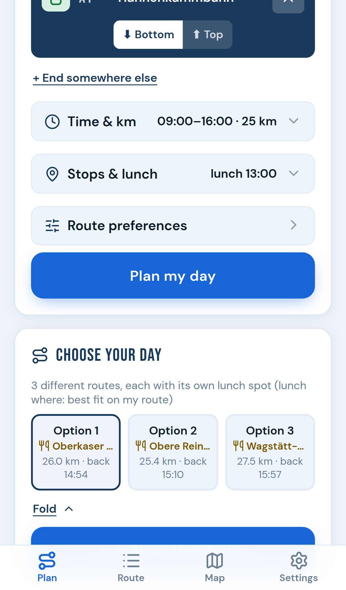
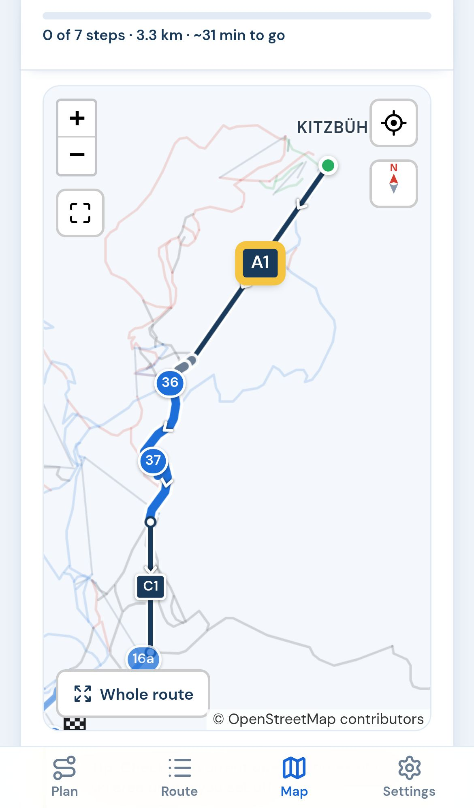
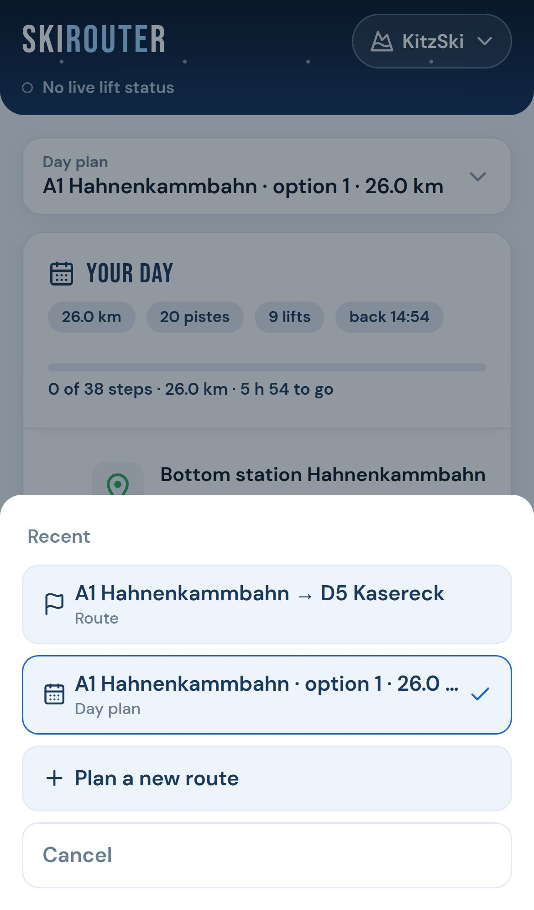
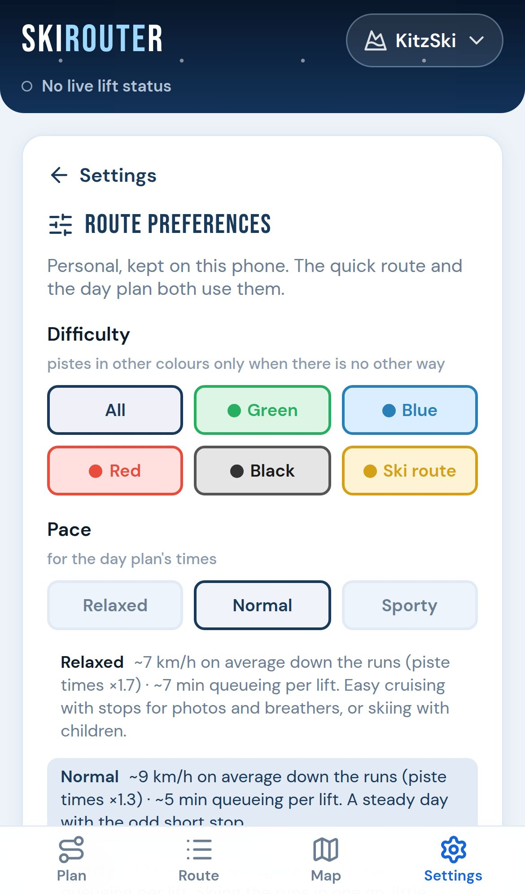
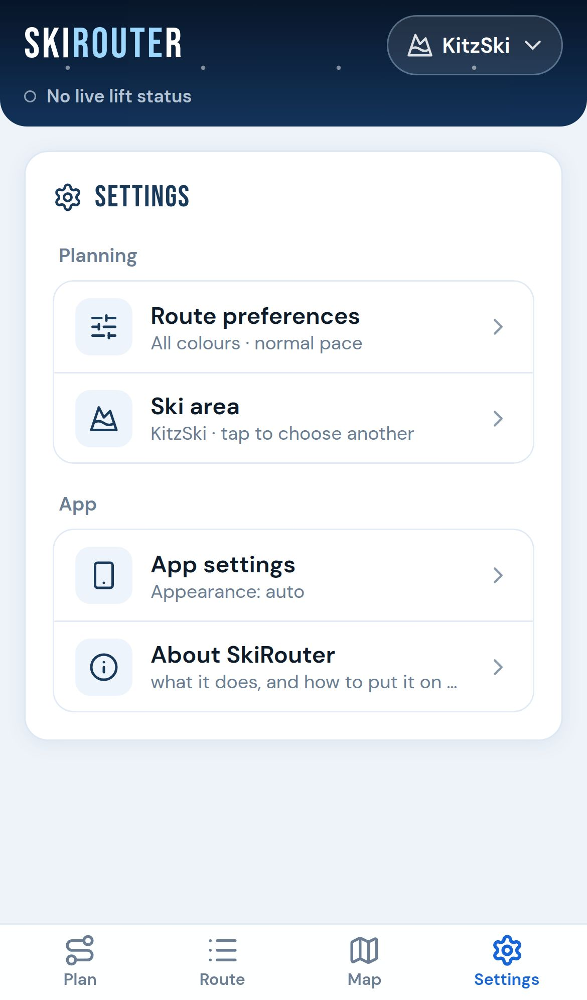

1. Getting started

Open SkiRouter from your home screen, or in your phone's browser. To put it on your home screen: on an iPhone in Safari, Share → Add to Home Screen; on Android in Chrome, menu ⋮ → Install app.
Choose your ski area. Search by the name of the area, a village or a region ("Kitzbühel", "Tirol", "Val Gardena"), or tap Ski areas near me to see the closest ones. All areas are listed per country.
- Tap the star next to an area to keep it at the top of the list as a favourite.
- Under each area you see whether it has live lift status (a filled dot) or not (an open dot).
- An area marked Not all lifts are connected has gaps in the map data: some lifts cannot be reached from the others.
SkiRouter opens the area you used last the next time you start it. To choose another, tap the area's name at the top of the screen, or go to Settings → Ski area.
2. The screen at a glance
At the top is the name of your ski area (tap it to change area) and, under it, the lift status: Live lift status · updated 08:12, or that there is none for this area.
At the bottom are four tabs, within reach of your thumb — also with gloves on:
- Plan
- Plan a route to a destination, or a whole day.
- Route
- The route you are following, step by step.
- Map
- The same route on the map — or the whole ski area when you have not planned one yet.
- Settings
- Your account, route preferences, ski area and how the app looks.
Tapping the tab you are already on takes you back to the top of the screen.
3. Plan a route to a destination

- Go to Plan and choose To a destination at the top.
- Tap Starting point and pick a lift, a place or your location (see the next section).
- Tap Destination and pick where you want to go.
- Tap Calculate route. The route opens in the Route tab.
- A lift is picked at its bottom station. The Bottom / Top switch under it changes that — for example to start at the top of the lift you just rode.
- The arrows between the two fields swap start and destination.
- The ✕ clears a field.
- Route preferences (piste colours, drag lifts, ski bus) are one tap away under the fields; see Route preferences.
SkiRouter takes the quickest way that fits your preferences: lift ride time plus the time down the pistes. Where a valley station has no piste down to it, it may take a gondola down ("ride down"). Where lift stations are only linked through the village, it uses the ski bus or a short walk.
4. Picking a start, destination or stop

The picker opens from the bottom of the screen. At its top you choose what to pick from:
- Lifts
- Every lift by its code (A1, A2, …) and name, with its type and whether it is open.
- Food & spots
- Mountain restaurants and huts, viewpoints and snow parks.
- Towns & peaks
- The towns, villages and peaks in and around the area.
- Search by typing; typing a lift's code ("d5") and tapping Go picks it straight away.
- Map (top right) shows the area instead of the list. Tap a lift or place: SkiRouter first shows what you tapped — type, ride time, opening hours — with one button to confirm (Start here, Go here, Add as stop).
- Use my location (for a starting point) starts where you are: from the nearest lift station, or, when you are on a piste, from the rest of that piste.
- A place is not on the lift network itself: the route goes by its nearest lift station and says how far that is ("350 m from bottom of E2").
5. Plan a whole day season pass

- Go to Plan and choose Whole day.
- Pick where the day starts. It ends there too, unless you tap + End somewhere else.
- Under Time & km: when you start, when you want to be back, and roughly how many kilometres you want to ski.
- Under Stops & lunch, add what you want to pass (optional, see below).
- Tap Plan my day.
Stops and lunch
- + Add a stop: a lift you want to ride, a restaurant, a viewpoint, a snow park, a village or a peak. SkiRouter passes your stops in the order that works best — you do not have to put them in order.
- Lunch is a stop with a time: around when, for how long, and where — the best fit on your route, or one restaurant you choose. In areas with mountain restaurants lunch is there by default; + Add lunch brings it back after removing it.
- The ✕ on a stop removes it.
Choose your day

SkiRouter tries hundreds of routes and offers up to three options that really differ — each with its kilometres, its time back and, with lunch, its own lunch spot. It prefers pistes you have not skied yet that day, and avoids riding the same lift over and over.
- Tap an option to choose it. Fold puts the options on one line.
- When the kilometres do not fit in the time, a note above the options says so — start earlier, stay later, ski fewer km or pick a faster pace.
- Save this day keeps it in your account, to plan it again any time (see saved days).
- Show the steps opens the chosen day in the Route tab.
Times are a guide: the lift ride plus a wait that depends on your pace, and the piste time stretched for short stops on the way down. Where the lift status is known, the planner uses today's opening hours.
6. Route: following it step by step

The Route tab lists every step in order:
- A lift: its code and name, its type and ride time, and whether it is open. On the step you are at, SkiRouter says which way to go when you get off: Off the lift, turn right to piste 21.
- A piste: its number in its colour, its name, its length and time. A long descent over several pistes shows each of them.
- The ski bus or a walk, where the route goes through the village.
- In a day plan: the time of every step, your stops, and lunch.
Ticking off
Tap a step when you have done it. The bar at the top shows how far along you are and what is left: steps, km and time. Forgot a few? Tapping a later step ticks the ones before it too. Tapping a ticked step unticks it.
In a day plan the bar also says whether you are on schedule, ahead or behind. When you would get back more than 10 minutes after the time you set, a red bar appears with Replan from here.
The step menu
Swipe a step to the left, or hold it, for a short menu:
- Replan from here (day plan): the steps before it count as done, and the rest of the day is planned again from there, from now, with the kilometres still to go.
- Avoid lift / Avoid piste: plan again without it (see Avoiding lifts and pistes).
Your progress is kept on your phone: close the app and open it again, and you are where you were.
7. Map

The Map tab shows the same route as the Route tab, drawn like a piste map: pistes in their colour, lifts as dark lines, and every lift and piste of your route labelled with its number. Arrows show which way you go.
- The map follows the step you are at (its label in yellow) and the next three; steps you have done turn grey. Whole route shows all of it, My step goes back.
- The compass turns the map like the area's piste map (valley at the bottom, lifts going up) or back to north up.
- The location button shows where you are, and follows you.
- The full screen button gives the map the whole screen; tap ✕ to close it.
- Pinch or use + and − to zoom; tap a line for its name.
Without a route, the Map tab shows the whole ski area with its kilometres of pistes, number of lifts and altitude.
8. Switching routes and saved days

At the top of the Route and Map tabs a bar says which route you are looking at, for example A1 Hahnenkammbahn → D5 Kasereck or Day plan · A1 Hahnenkammbahn · option 2 · 25.4 km. Tap it for:
- Recent: your last route to a destination and your last day plan. A quick detour to a hut during the day does not lose the day you are following: switch back with one tap, with your ticks still there.
- Saved days: the days you saved. Opening one plans it again in its ski area, with the settings it was saved with and today's lift status. One from another ski area switches area first.
- Plan a new route.
9. Live lift status and opening hours
For many ski areas SkiRouter reads which lifts are open from the area's own lift information, updated every 30 minutes and refreshed every 5 minutes while the app is open.
- The picker and every lift step show open 08:30–17:00 or closed.
- A route over a closed lift gets a warning above the steps, with a button to avoid those lifts.
- The day planner only uses lifts while they are open today.
- The top of the screen says how fresh the status is. Without a connection you see the last status you had.
Lifts and pistes can close during the day for wind, snow or events: always follow the signs and the staff on the mountain.
10. Avoiding lifts and pistes
Any lift or piste can be left out, open or not — a long queue, a lift you do not like, an icy piste:
- In the Route tab, swipe the step left or hold it, and choose Avoid lift or Avoid piste. The route is planned again without it; a day you are following is planned again from the next step.
- At a closed-lift warning, Avoid these leaves out all closed lifts on the route at once.
- While any are avoided, the Route preferences line in the Plan tab turns red and says how many ("2 avoided"). The list itself is in Route preferences; the ✕ on one brings it back, and with two or more Clear all brings them all back at once.
They are kept per ski area. If there is no way left without them, SkiRouter says so.
11. Route preferences

Open them from Settings → Route preferences, or from the Route preferences line in the Plan tab. Both kinds of planning use them.
- Difficulty
- The piste colours you want: green (where the area has them), blue, red, black and ski routes. Other colours are only used when there is no other way — and the route then says so.
- Pace
- Relaxed — about 7 km/h down the runs and ~7 minutes queueing per lift, for easy cruising or skiing with children. Normal — about 9 km/h and ~5 minutes. Sporty — about 12 km/h and ~3 minutes. Used for the day plan's times.
- Drag lifts
- Off: T-bars and button lifts only when there is no other way.
- Ski bus
- In areas with a ski bus link: off plans with lifts and pistes only.
- Lifts and pistes you avoid
- The ones you left out in this ski area (see above).
Back to planning takes you back to the Plan tab; a route on screen is planned again with your new preferences.
12. Settings and appearance

The Settings tab is a menu; each part opens on its own screen with ‹ Settings at the top.
- Account (when you are signed in): your season pass and saved days.
- Planning: Route preferences and Ski area.
- App: App settings, Guide (this page) and About SkiRouter, both in your browser.
Appearance
Under App settings: Auto follows your phone's light or dark mode; Light and Dark keep one; Sun is white, black and heavier lines — made for reading the screen in bright sunshine on the snow.
13. Your account and the season pass
- Creating an account takes your email address, a password, your date of birth (SkiRouter is for 16 and over) and your country. You confirm your address with a link we email you.
- Your preferences go with your account: sign in on another phone and they are there.
- Free: routes to a destination in every ski area, the map, live lift status and offline use.
- The season pass adds the day planner and saving your days. It is one payment per winter (iDEAL, Bancontact, card and more), valid until 30 June — no subscription, nothing to cancel. Bought from May on, it is for the coming season. While SkiRouter is being tested there is nothing to pay: every account has the day planner and saved days, and Settings → Account says "Test phase".
- Forgot your password? Tap it on the sign-in screen for a link to choose a new one.
- Delete my account (in Settings → Account) removes your account, preferences and saved days.
14. On the mountain without a signal
SkiRouter keeps what it needs on your phone:
- the app itself, once opened with a connection;
- every ski area you opened before;
- your account, preferences, saved days and the route you are following;
- the last lift status it had.
Before you go: open the app once with a connection and open your ski area. Then planning, the route and the map all work without a signal. Signing in, paying and saving a day need a connection.
15. Where the data comes from
Lifts, pistes, restaurants, peaks and villages come from OpenStreetMap, made by volunteers, via OpenSkiMap, and are updated regularly. Lift status comes from the ski areas' own lift information. Map data can be incomplete or out of date — where something looks wrong, the map on the slope is right.
SkiRouter is a guide: always follow the signs, piste markings, closures and the instructions of the ski area and its staff, and ski within your ability.